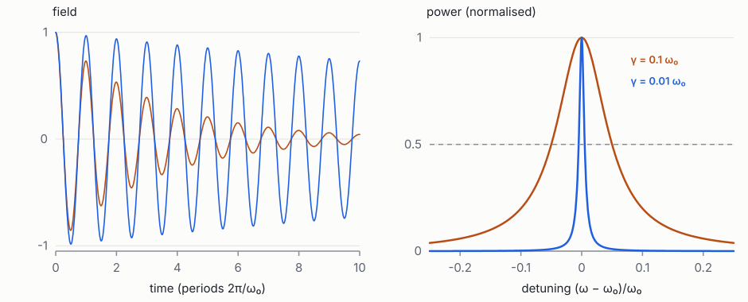
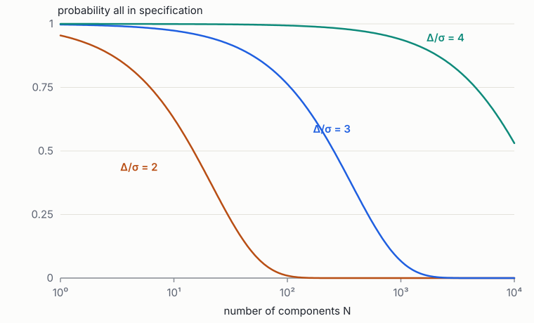

Foundations of Quantum Engineering · Book 1 of 7
Mathematics for Quantum Engineering
Complex numbers, linear algebra, differential equations, Fourier analysis, probability and numerical methods, taught with quantum devices in mind
How to use this book
Quantum engineering borrows its mathematics from three places at once. From quantum mechanics it takes complex vector spaces, operators and their eigenvalues. From electrical engineering it takes phasors, differential equations, Fourier transforms and resonances. From manufacturing and data science it takes probability, statistics and optimisation. A physicist usually learns the first, an electrical engineer the second, and a data scientist the third. Someone who wants to build design tools for quantum processors needs all three, and needs to see that they are the same mathematics wearing different clothes.
This book assumes school algebra, trigonometry and the idea of a derivative and an integral. Everything else is built from there, with the later books of the series in view. Each chapter opens with its goals, develops the ideas with derivations you can follow line by line, works examples that come from real quantum devices, and ends with exercises. Every exercise has a worked solution behind a Solution toggle. Try the exercise first; the struggle is where the learning happens.
Three habits that pay off for the whole series.
- Check units and limits. Before trusting any formula, check that both sides have the same units and that it does the obvious thing when a parameter goes to zero or infinity.
- Compute small cases by hand. A \(2\times2\) matrix, a single oscillator, a coin flip. Most ideas in this book can be checked on a napkin.
- Keep a notebook with a Python prompt open. NumPy and SciPy reproduce every calculation here in a line or two. Use them to check your hand calculations, not to replace them.
The chapters can be read in order. Chapters 1–4 (complex numbers, vectors, operators, tensor products) are needed before Book 3 on quantum mechanics. Chapters 5–6 (differential equations, Fourier analysis) are needed before Book 2 on classical physics. Chapters 7–8 (probability, numerical methods and optimisation) are needed before Book 7 on manufacturing and yield, and they are used throughout the review that ends the series.
1 Complex numbers, the exponential and phasors
Goals
- Do arithmetic with complex numbers, and picture them as points and arrows in a plane.
- Understand Euler's formula \(\ee^{\ii\theta} = \cos\theta + \ii\sin\theta\), why it is true, and how it turns trigonometry into algebra.
- Represent oscillating signals as phasors, and know the two sign conventions used by physicists and engineers.
- Understand rotating frames and why quantum amplitudes must be complex numbers.
Almost everything in quantum engineering oscillates: voltages in circuits, light waves, the state of a qubit. Describing oscillations with sines and cosines works, but the algebra quickly becomes painful. Complex numbers make it easy: an oscillation becomes an arrow spinning in a plane, adding two oscillations becomes adding two arrows, and differentiating becomes multiplying. Quantum mechanics goes further and is built on complex numbers, because the "amplitudes" that predict probabilities are complex. This chapter starts from the definition and ends with the tools used on almost every later page.
1.1 Arithmetic in the plane
No real number squares to \(-1\). We simply invent a symbol \(\ii\) with the single rule \(\ii^2 = -1\), and allow numbers of the form
\[ z = x + \ii y, \qquad x, y \text{ real}. \]We call \(x = \Re z\) the real part and \(y = \Im z\) the imaginary part. (The name "imaginary" is a historical accident; these numbers are as real as negative numbers, which were also once called absurd.) Arithmetic follows the ordinary rules of algebra plus \(\ii^2 = -1\):
- Addition adds the parts separately: \((1 + 2\ii) + (3 - \ii) = 4 + \ii\).
- Multiplication expands the brackets and replaces \(\ii^2\) by \(-1\):
For example \((1 + 2\ii)(3 - \ii) = 3 - \ii + 6\ii - 2\ii^2 = 3 + 5\ii + 2 = 5 + 5\ii\).
Two more definitions do most of the work. The complex conjugate flips the sign of the imaginary part, \(z^* = x - \ii y\). The modulus (or absolute value) is \(|z| = \sqrt{x^2+y^2}\). They are linked by the identity used constantly in quantum mechanics:
A complex number times its conjugate is always a non-negative real number. That is how quantum mechanics will turn complex amplitudes into real probabilities. Division uses the same trick: to compute \(1/z\), multiply top and bottom by \(z^*\) to make the bottom real:
\[ \frac{1}{3 + 4\ii} = \frac{3 - 4\ii}{(3+4\ii)(3-4\ii)} = \frac{3 - 4\ii}{25} = 0.12 - 0.16\ii . \]The complex plane. Draw \(z = x + \ii y\) as the point \((x, y)\), or as an arrow from the origin to that point. The horizontal axis is the "real axis", the vertical one the "imaginary axis". Addition is then adding arrows tip to tail, exactly like adding forces or velocities. The modulus is the arrow's length (by Pythagoras), and the conjugate is the mirror image in the real axis. Multiplication has a beautiful picture too, which the next section reveals.
1.2 Polar form and Euler's formula
Any point in the plane can also be given by its distance \(r = |z|\) from the origin and its angle \(\theta\) from the positive real axis. Then \(x = r\cos\theta\) and \(y = r\sin\theta\), so
\[ z = r(\cos\theta + \ii\sin\theta). \]The angle is called the argument or phase, \(\theta = \arg z\). Now multiply two numbers written this way, and use the angle-addition formulas from school trigonometry:
\[ (\cos\alpha + \ii\sin\alpha)(\cos\beta+\ii\sin\beta) = (\cos\alpha\cos\beta - \sin\alpha\sin\beta) + \ii(\sin\alpha\cos\beta+\cos\alpha\sin\beta) = \cos(\alpha+\beta) + \ii\sin(\alpha+\beta). \]Multiplying adds the angles. Call \(f(\theta) = \cos\theta + \ii\sin\theta\). We have just shown \(f(\alpha)f(\beta) = f(\alpha+\beta)\). The only functions with that property are exponentials (\(\ee^{a}\ee^{b} = \ee^{a+b}\)). To find which exponential, differentiate:
\[ \frac{\dd f}{\dd\theta} = -\sin\theta + \ii\cos\theta = \ii(\cos\theta + \ii\sin\theta) = \ii f(\theta), \qquad f(0) = 1 . \]The function whose derivative is \(\ii\) times itself, and which equals 1 at zero, is \(\ee^{\ii\theta}\) (just as \(\ee^{kx}\) is the function whose derivative is \(k\) times itself). This is Euler's formula:
A second check uses power series. Since \(\ee^x = 1 + x + x^2/2! + x^3/3! + \cdots\), substitute \(x = \ii\theta\) and use \(\ii^2 = -1\), \(\ii^3 = -\ii\), \(\ii^4 = 1\): the real terms \(1 - \theta^2/2! + \theta^4/4! - \cdots\) are the series for \(\cos\theta\), and the imaginary terms \(\theta - \theta^3/3! + \cdots\) the series for \(\sin\theta\). Both arguments agree.
Some values worth memorising, read straight off the unit circle: \(\ee^{\ii0} = 1\), \(\ee^{\ii\pi/2} = \ii\), \(\ee^{\ii\pi} = -1\), \(\ee^{\ii3\pi/2} = -\ii\), \(\ee^{2\pi\ii} = 1\). The famous \(\ee^{\ii\pi} + 1 = 0\) is the third one.
In polar form, multiplication is easy to picture: \(r_1\ee^{\ii\theta_1}\cdot r_2\ee^{\ii\theta_2} = r_1r_2\,\ee^{\ii(\theta_1+\theta_2)}\). Lengths multiply and angles add. Multiplying by \(\ee^{\ii\phi}\) (length 1) simply rotates an arrow by \(\phi\) without stretching it. Multiplying by \(\ii = \ee^{\ii\pi/2}\) rotates by a quarter turn, which is why \(\ii^2\), two quarter turns, points backwards: \(-1\).
Inverting Euler's formula (add and subtract it with \(\theta\to-\theta\)) gives the two identities you will use most:
A cosine is the average of two arrows rotating in opposite directions.
Worked example: trigonometry without memorisation. Find \(\cos^2\theta\) in terms of \(\cos 2\theta\).
Using (4), \(\cos^2\theta = \tfrac14(\ee^{\ii\theta}+\ee^{-\ii\theta})^2 = \tfrac14(\ee^{2\ii\theta} + 2 + \ee^{-2\ii\theta}) = \tfrac12 + \tfrac12\cos2\theta\). Every product-to-sum formula comes out the same way. In Book 3 the identical algebra produces the "rotating-wave approximation", where a product of a drive \(\cos\omega t\) and a qubit oscillation \(\ee^{-\ii\omega_q t}\) splits into a slowly varying part and a fast part that averages away.
What is \((1 + \ii)^8\)? Use polar form.
Answer
\(1+\ii = \sqrt2\,\ee^{\ii\pi/4}\). So \((1+\ii)^8 = (\sqrt2)^8\ee^{2\pi\ii} = 16\).
1.3 Oscillations and phasors
A sinusoidal signal of amplitude \(A\), angular frequency \(\omega\) (in radians per second, \(\omega = 2\pi f\)) and phase \(\phi\) is \(v(t) = A\cos(\omega t + \phi)\). Using Euler's formula,
Picture an arrow of length \(A\) rotating anticlockwise at \(\omega\); the real signal is its shadow on the horizontal axis. The complex number \(\tilde V\), the arrow's position at \(t = 0\), is the phasor. It stores the amplitude (length) and phase (angle); the factor \(\ee^{\ii\omega t}\) is the same for every signal in a linear circuit driven at one frequency, so we can drop it and work with phasors alone.
The big payoff: differentiation becomes multiplication. \(\frac{\dd}{\dd t}\ee^{\ii\omega t} = \ii\omega\,\ee^{\ii\omega t}\). A capacitor obeys \(i = C\,\dd v/\dd t\), so for phasors \(\tilde I = \ii\omega C\,\tilde V\), and its impedance (the complex ratio of voltage to current) is \(Z_C = \tilde V/\tilde I = 1/(\ii\omega C)\). An inductor, \(v = L\,\dd i/\dd t\), has \(Z_L = \ii\omega L\). A resistor has \(Z_R = R\). Circuit analysis at a single frequency becomes Ohm's law with complex numbers, \(\tilde V = Z\tilde I\), and impedances in series add. Book 2 builds microwave engineering on exactly this.
Worked example: an RC filter. A resistor \(R = 1\) kΩ in series with a capacitor \(C = 1\) nF, driven at frequency \(f\). The total impedance is \(Z = R + 1/(\ii\omega C) = R - \ii/(\omega C)\). At \(f = 159\) kHz, \(\omega = 10^6\) rad/s and \(1/\omega C = 1\) kΩ, so \(Z = (1 - \ii)\) kΩ: modulus \(\sqrt2\) kΩ, angle \(-45^\circ\). The current is \(\tilde I = \tilde V/Z\): smaller by \(\sqrt2\) than through the resistor alone, and leading the voltage by \(45^\circ\). One line of complex arithmetic replaced a differential equation.
Sign conventions. Electrical engineers write \(\ee^{+j\omega t}\) with \(j=\sqrt{-1}\), so an inductor is \(j\omega L\). Physicists write \(\ee^{-\ii\omega t}\), because the Schrödinger equation makes a state of energy \(E\) evolve as \(\ee^{-\ii Et/\hbar}\); in that convention an inductor is \(-\ii\omega L\). Nothing physical changes, since the two are complex conjugates, but formulas copied between an engineering text and a physics paper often disagree by a conjugate. When a sign looks wrong, check the convention first. This series uses \(\ee^{-\ii\omega t}\) in quantum chapters and says so explicitly when it switches to the engineering convention for circuits.
Interference. Two phasors at the same frequency add like arrows. Two equal arrows \(A\ee^{\ii\phi_1}\) and \(A\ee^{\ii\phi_2}\) give a sum of length \(2A|\cos((\phi_1-\phi_2)/2)|\): \(2A\) when the phases agree, zero when they differ by \(\pi\) (pointing opposite ways). Power is proportional to the modulus squared:
\[ |\tilde V_1+\tilde V_2|^2 = |\tilde V_1|^2 + |\tilde V_2|^2 + 2\Re(\tilde V_1\tilde V_2^*). \]The last term, the cross term, is interference. It can be positive or negative, so two waves can add to more or less than the sum of their powers. It is what makes interferometers work, from a Mach–Zehnder modulator to the quantum interference of photons in Book 5.
1.4 Rotating frames
Many signals in quantum engineering oscillate near a "carrier" frequency \(\omega_0\) with a slowly changing envelope: \(s(t) = a(t)\,\ee^{-\ii\omega_0 t}\). For example, a 5 GHz microwave pulse whose amplitude rises and falls over 20 ns. Multiplying by \(\ee^{+\ii\omega_0 t}\) removes the fast carrier and leaves the slow envelope \(a(t)\). We say we have moved to a frame rotating at \(\omega_0\): like watching a merry-go-round while standing on it, so the horses appear still.
In the rotating frame, a component oscillating at \(\omega\) in the lab appears to oscillate at \(\omega - \omega_0\), the detuning. A component exactly at \(\omega_0\) appears frozen. This is what a radio receiver does in hardware (it mixes the signal with a local oscillator), and what a quantum engineer does on paper to make qubit dynamics look slow and simple. You will meet it again in the Rabi problem (Book 3 §5), in readout, and in pulse design.
Worked example: beats. Two tones at 5.000 and 5.002 GHz. In a frame rotating at 5.001 GHz, they appear at \(\pm1\) MHz: \(\ee^{-\ii2\pi(10^6)t} + \ee^{+\ii2\pi(10^6)t} = 2\cos(2\pi\times10^6t)\). So the lab signal is a 5.001 GHz carrier whose amplitude swells and fades once every 0.5 µs: a beat. The rotating frame shows this instantly; working directly with 5 GHz sines would hide it.
1.5 Why quantum amplitudes are complex
In quantum mechanics (Book 3), when a system can reach an outcome along two indistinguishable paths, each path is assigned an amplitude, a complex number \(c_k\), and the probability of the outcome is the modulus squared of the sum, \(P = |c_1 + c_2|^2\). By (2) that contains a cross term \(2\Re(c_1c_2^*)\), so probabilities can cancel: interference.
Real numbers with signs would allow some cancellation, so why complex? Two reasons that will become clear later. Time evolution is a continuous rotation of phases, \(\ee^{-\ii Et/\hbar}\), which needs a whole circle of phases, not just \(\pm1\). And describing a spin, which can point along three perpendicular directions in space, needs three mutually "perpendicular" families of states in a two-dimensional space, which real numbers cannot supply (Book 3 §1.3).
Only relative phases between amplitudes are observable. Multiplying every amplitude by the same \(\ee^{\ii\chi}\) leaves every probability \(|c_1+c_2|^2\) unchanged, so a "global phase" means nothing physically. Changing the phase of just one amplitude changes the cross term and is very much observable. Confusing the two is a common early mistake.
Every simulated quantity in a superconducting-chip design flow, from an impedance \(Z(\omega)\) to a scattering parameter \(S_{21}\), is a complex number at each frequency. Its modulus tells you how much signal passes; its phase tells you the delay and, near a resonance, the frequency and linewidth. Reading a resonator's response as a circle in the complex plane, rather than as a dip in a magnitude plot, is how loss is extracted from measurements (Book 2, Book 2 §6).
- \(z = x + \ii y = r\ee^{\ii\theta}\); \(zz^* = |z|^2\) is real and non-negative.
- Euler: \(\ee^{\ii\theta} = \cos\theta + \ii\sin\theta\); multiplying complex numbers multiplies lengths and adds angles.
- A phasor stores amplitude and phase; differentiation becomes multiplication by \(\ii\omega\); impedances \(R\), \(\ii\omega L\), \(1/\ii\omega C\).
- Interference lives in the cross term \(2\Re(z_1z_2^*)\).
- Rotating frames remove a fast carrier and leave the detuning; only relative phases are observable.
Exercises
- Write \(z = 1 + \ii\sqrt3\) in polar form and compute \(z^6\).
Solution
\(|z| = \sqrt{1+3}=2\) and \(\arg z = \arctan\sqrt3 = \pi/3\), so \(z = 2\ee^{\ii\pi/3}\). Then \(z^6 = 2^6\ee^{2\pi\ii} = 64\).
- Show that \(|z_1z_2| = |z_1||z_2|\) and that \((z_1z_2)^* = z_1^*z_2^*\).
Solution
In polar form \(z_1z_2 = r_1r_2\ee^{\ii(\theta_1+\theta_2)}\), whose modulus is \(r_1r_2\). Conjugation flips the sign of every phase, so \((z_1z_2)^* = r_1r_2\ee^{-\ii(\theta_1+\theta_2)} = z_1^*z_2^*\).
- A resistor \(R\) is in series with a capacitor \(C\). Find the impedance and the frequency at which the current leads the voltage by \(45^\circ\) (engineering convention \(\ee^{j\omega t}\)).
Solution
\(Z = R - j/(\omega C)\). The current's phase relative to the voltage is \(-\arg Z = \arctan(1/(\omega RC))\), which equals \(45^\circ\) when \(\omega RC = 1\): the corner frequency of an RC filter.
- Use (4) to show \(\cos A\cos B = \tfrac12[\cos(A-B) + \cos(A+B)]\). If \(A = \omega_d t\) is a drive and \(B = \omega_q t\) a qubit oscillation with both near \(2\pi\times5\) GHz, which term survives averaging over 10 ns?
Solution
Expanding both cosines in exponentials gives the stated result. The frequencies are the difference (near zero) and the sum (about 10 GHz). Over 10 ns the sum term completes about 100 cycles and averages to nearly zero; the difference term survives. Dropping the sum term is the rotating-wave approximation.
- Show that multiplying all amplitudes by a common phase \(\ee^{\ii\chi}\) leaves \(|c_1+c_2|^2\) unchanged, but changing only \(c_2\to c_2\ee^{\ii\chi}\) does not.
Solution
\(|\ee^{\ii\chi}(c_1+c_2)|^2 = |c_1+c_2|^2\). With only \(c_2\) changed, the cross term becomes \(2\Re(c_1c_2^*\ee^{-\ii\chi})\), which depends on \(\chi\).
- Compute \((2 + \ii)/(1 - \ii)\) in Cartesian form, and check your answer by converting both numbers to polar form.
Solution
Multiply top and bottom by \(1 + \ii\): \((2+\ii)(1+\ii)/2 = (2 + 3\ii - 1)/2 = 0.5 + 1.5\ii\). Polar: \(|2+\ii| = \sqrt5\), \(|1-\ii| = \sqrt2\), ratio \(\sqrt{2.5} = 1.58\), and \(|0.5+1.5\ii| = \sqrt{2.5}\) ✓. Angles: \(26.6^\circ - (-45^\circ) = 71.6^\circ\), and \(\arctan3 = 71.6^\circ\) ✓.
- An inductor \(L = 10\) nH and a capacitor \(C = 1\) pF are in series. At what frequency is the total impedance zero, and what is special about it?
Solution
\(Z = \ii\omega L + 1/(\ii\omega C) = \ii(\omega L - 1/\omega C)\), zero when \(\omega = 1/\sqrt{LC} = 10^{10}\) rad/s, i.e. 1.6 GHz. That is the LC resonance frequency (Chapter 5, Book 2): the inductor's and capacitor's impedances cancel.
2 Vector spaces, inner products and Dirac notation
Goals
- Know what a vector space, a basis and a dimension are, and why lists of complex numbers and even functions are vectors.
- Compute inner products, lengths, angles and projections, and turn any set of vectors into an orthonormal basis.
- Read and write Dirac's bra–ket notation fluently, including outer products, projectors and the resolution of the identity.
The state of a quantum system is a vector: a list of complex numbers, one per possible outcome. Measuring the system means asking how much of that vector points along each outcome, which is a question about projections and inner products. The same mathematics describes the modes of a microwave resonator, the coefficients of a Fourier series and the basis functions of a finite-element solver. This chapter builds it from the familiar picture of arrows in space, step by step, and ends with Dirac's notation, the shorthand physicists use for all of it.
2.1 Vectors beyond arrows
At school a vector is an arrow with a length and a direction, like a velocity. In components, an arrow in 3D space is a list of three numbers, \((v_1, v_2, v_3)\). Two operations make arrows useful: you can add them (tip to tail, or component by component) and you can scale them by a number (stretch or shrink). The abstract idea of a vector space keeps exactly these two operations and forgets the arrows: a vector space is any collection of objects that can be added and multiplied by numbers, following the usual rules (order of addition does not matter, there is a zero vector, multiplication distributes over addition, and so on). When the numbers are complex we have a complex vector space. Examples you will meet:
- Columns of \(n\) complex numbers, called \(\CC^n\). The state of a qubit lives in \(\CC^2\); of two qubits in \(\CC^4\).
- Complex-valued functions \(f(x)\) on an interval, added point by point: \((f+g)(x) = f(x) + g(x)\). The wavefunction of a particle lives in such a space.
- Polynomials of degree at most \(d\). Two polynomials add to a polynomial; a multiple of a polynomial is a polynomial.
A set of vectors is linearly independent if none of them can be built from the others, i.e. the only way to get \(\sum_kc_kv_k = 0\) is with all \(c_k = 0\). A basis is an independent set from which every vector can be built, in exactly one way. The number of basis vectors is the dimension. In 3D space, the three unit arrows along \(x\), \(y\), \(z\) are a basis. \(\CC^n\) has dimension \(n\). The space of functions on an interval is infinite-dimensional: it needs infinitely many basis functions, such as the sines and cosines of Fourier series (Chapter 6).
Are \((1, 2)\) and \((2, 4)\) a basis of \(\RR^2\)? What about \((1, 2)\) and \((2, 1)\)?
Answer
No: \((2,4) = 2(1,2)\), so they are dependent and only reach the vectors along one line. Yes: neither is a multiple of the other, so together they reach every point of the plane.
2.2 Inner products, length and angle
Adding and scaling are not enough to talk about length, angle or "how much of one vector points along another". For that we need an inner product: a rule that takes two vectors and returns a number. For real arrows it is the familiar dot product, \(\mathbf u\cdot\mathbf v = u_1v_1 + u_2v_2 + u_3v_3 = |\mathbf u||\mathbf v|\cos\theta\). For complex vectors in \(\CC^n\) the standard choice is
Why the complex conjugate on the first vector? Without it, the "length squared" of \(v = (1,\ii)\) would be \(1\cdot1 + \ii\cdot\ii = 1 - 1 = 0\): a nonzero vector with zero length, which is nonsense. With the conjugate, \(\langle v,v\rangle = |1|^2+|\ii|^2 = 2\), always positive ((2)). The rules an inner product obeys are: it is linear in the second vector; swapping the two vectors conjugates the result, \(\langle u, v\rangle = \langle v, u\rangle^*\); and \(\langle v,v\rangle > 0\) for every nonzero \(v\).
For functions on \([a,b]\), the sum over components becomes an integral over points:
Two vectors are orthogonal (perpendicular) if \(\langle u,v\rangle = 0\). A vector of length 1 is normalised. A basis \(\{e_k\}\) whose vectors are all normalised and mutually orthogonal, \(\langle e_j, e_k\rangle = \delta_{jk}\) (the Kronecker delta: 1 if \(j = k\), 0 otherwise), is orthonormal.
Orthonormal bases make life easy. If \(v = \sum_kc_ke_k\), take the inner product with \(e_j\): all terms vanish except \(k = j\), leaving
\[ c_j = \langle e_j, v\rangle . \]To find "how much of \(v\) is along \(e_j\)", just take an inner product. This one-line fact is behind Fourier series, quantum measurement and the modal analysis of electromagnetic structures alike.
Worked example: components in a tilted basis. In \(\RR^2\), use the orthonormal basis \(e_1 = (1,1)/\sqrt2\), \(e_2 = (1,-1)/\sqrt2\) (the usual axes rotated by \(45^\circ\)). Express \(v = (3, 1)\). \(c_1 = \langle e_1, v\rangle = (3+1)/\sqrt2 = 2\sqrt2\); \(c_2 = (3-1)/\sqrt2 = \sqrt2\). Check: \(2\sqrt2\,e_1 + \sqrt2\,e_2 = (2,2) + (1,-1) = (3,1)\) ✓. And the length is preserved: \(\|v\|^2 = 9 + 1 = 10 = (2\sqrt2)^2 + (\sqrt2)^2\). Exactly this calculation, with complex numbers, tells you the probabilities of measuring a qubit in a rotated basis.
Cauchy–Schwarz inequality. \(|\langle u,v\rangle| \le \|u\|\,\|v\|\), with equality only when one vector is a multiple of the other.
Proof. If \(u=0\) it is trivial. Otherwise split \(v\) into its part along \(u\) and the rest: \(w = v - \frac{\langle u, v\rangle}{\|u\|^2}u\) is orthogonal to \(u\). Lengths squared are never negative, so \(0 \le \|w\|^2 = \|v\|^2 - |\langle u,v\rangle|^2/\|u\|^2\), which rearranges to the claim. ∎
In ordinary space this just says \(|\cos\theta|\le1\). In quantum mechanics it guarantees that probabilities, which are squared inner products of unit vectors, lie between 0 and 1, and it is the mathematical root of the Heisenberg uncertainty relation (Book 3 §2.4).
2.3 Projection and Gram–Schmidt
The orthogonal projection of \(v\) onto the direction of a unit vector \(e\) is \(\langle e, v\rangle\,e\): the "shadow" of \(v\) along \(e\). What remains, \(v - \langle e,v\rangle e\), is perpendicular to \(e\). Subtracting projections one at a time turns any independent list of vectors into an orthonormal one. This is the Gram–Schmidt procedure: given \(v_1, v_2, \dots\),
In words: take the next vector, remove its components along all the directions you already have, and normalise what is left.
Worked example. Orthonormalise \(v_1 = (1, 1, 0)\) and \(v_2 = (1, 0, 1)\).
\(e_1 = (1,1,0)/\sqrt2\). Then \(\langle e_1, v_2\rangle = 1/\sqrt2\), so \(w_2 = (1,0,1) - \tfrac{1}{\sqrt2}\cdot\tfrac{(1,1,0)}{\sqrt2} = (\tfrac12, -\tfrac12, 1)\), with length \(\sqrt{3/2}\). So \(e_2 = (1,-1,2)/\sqrt6\). Check: \(\langle e_1, e_2\rangle = (1 - 1 + 0)/\sqrt{12} = 0\) ✓.
Numerically, a careful version of the same idea is the QR factorisation used inside eigenvalue solvers (Chapter 8), and it is how finite-element and mode solvers build well-conditioned bases.
2.4 Dirac notation
Quantum mechanics uses a notation invented by Paul Dirac that makes inner products and projections almost automatic. It looks strange at first; it is worth practising until it feels natural, because all of Books 3–6 use it.
- A vector is written as a ket, \(\ket{\psi}\). Think "column vector".
- For each ket there is a bra, \(\bra{\psi}\): its conjugate transpose, a row of conjugated numbers. Think "row vector".
- A bra next to a ket, \(\braket{\phi}{\psi}\) ("bra-ket", hence the name), is the inner product: row times column gives a number.
Putting them the other way round, ket then bra, \(\ketbra{\psi}{\phi}\), is a column times a row: an \(n\times n\) matrix, the outer product. It acts on a vector by "measuring its overlap with \(\phi\) and returning that much of \(\psi\)":
\[ \big(\ketbra{\psi}{\phi}\big)\ket{\chi} = \ket{\psi}\braket{\phi}{\chi} . \]For a unit vector \(\ket e\), the matrix \(P = \ketbra{e}{e}\) is the projector onto \(\ket e\): it returns the shadow \(\ket e\braket{e}{\chi}\). Applying it twice changes nothing more (\(P^2 = P\)), as a projection should.
If \(\{\ket{k}\}\) is an orthonormal basis, then every vector is the sum of its shadows on the basis vectors, \(\ket\psi = \sum_k \ket{k}\braket{k}{\psi}\). Since that is true for every \(\ket\psi\), the sum of all the projectors must be the identity:
This resolution of the identity is the most used line in quantum mechanics. You can insert it anywhere (it is just "1"), and doing so expresses an abstract quantity in a chosen basis. For instance, \(\braket{\phi}{\psi} = \bra\phi I\ket\psi = \sum_k \braket{\phi}{k}\braket{k}{\psi} = \sum_k \phi_k^*\psi_k\), recovering (9).
For a qubit, the standard ("computational") basis and the "plus/minus" basis are
\[ \ket0 = \begin{pmatrix}1\\0\end{pmatrix}, \quad \ket1 = \begin{pmatrix}0\\1\end{pmatrix}, \qquad \ket{\pm} = \frac{\ket0 \pm \ket1}{\sqrt2}. \]Both are orthonormal bases of \(\CC^2\). A general normalised qubit state is \(\alpha\ket0 + \beta\ket1\) with \(|\alpha|^2+|\beta|^2=1\).
Worked example: Dirac notation in action. For \(\ket\psi = (3\ket0 + 4\ii\ket1)/5\), find \(\braket{+}{\psi}\) and the projector onto \(\ket\psi\).
\(\bra+ = (\bra0 + \bra1)/\sqrt2\), and \(\braket{0}{0} = 1\), \(\braket01 = 0\), etc., so \(\braket{+}{\psi} = \frac{1}{5\sqrt2}(3 + 4\ii)\). Its modulus squared is \(25/50 = 1/2\): measuring this state in the \(\pm\) basis gives "+" half the time (Book 3). The projector: \(\ketbra\psi\psi = \frac{1}{25}\begin{pmatrix}3\\4\ii\end{pmatrix}(3,\ -4\ii) = \frac{1}{25}\begin{pmatrix}9 & -12\ii\\ 12\ii & 16\end{pmatrix}\). Note the conjugation in the bra.
Infinite dimensions, briefly. For a particle on a line, the "basis" \(\ket{x}\) of position states is continuous. Sums become integrals and the Kronecker delta becomes the Dirac delta (Chapter 6): \(\int \ketbra{x}{x}\,\dd x = I\), \(\braket{x}{x'} = \delta(x-x')\), and \(\braket{x}{\psi} = \psi(x)\) is the wavefunction. The rigorous theory is delicate, but for engineering every formula works if you replace \(\sum_k\) by \(\int\dd x\). A space with an inner product that is complete (limits of convergent sequences stay inside) is a Hilbert space; every finite-dimensional one is.
The capacitance matrix of a layout and the modes of a 3D electromagnetic simulation are both expressed in bases, and the overlap integrals that couple them are inner products like (7). The "energy participation ratio" used to turn a field simulation into a qubit Hamiltonian (Lab to Foundry §3.3) is a ratio of such integrals. Understanding projection onto a basis is understanding what those tools compute.
- A vector space is anything you can add and scale; a basis builds every vector uniquely; the dimension counts basis vectors.
- Complex inner product \(\langle u,v\rangle = \sum u_k^*v_k\) (conjugate first); orthonormal bases give components as inner products.
- Projection removes components; Gram–Schmidt builds orthonormal bases.
- Kets are columns, bras conjugated rows; \(\braket\phi\psi\) is a number, \(\ketbra\psi\phi\) a matrix; \(\sum_k\ketbra kk = I\).
Exercises
- Compute \(\braket{+}{-}\), \(\braket{0}{+}\) and \(\| \ket0 + \ii\ket1\|\).
Solution
\(\braket{+}{-} = \tfrac12(1 - 1) = 0\). \(\braket{0}{+} = 1/\sqrt2\). \(\|\ket0+\ii\ket1\| = \sqrt{|1|^2+|\ii|^2} = \sqrt2\).
- Show that \(\ket{\pm\ii} = (\ket0 \pm \ii\ket1)/\sqrt2\) form an orthonormal basis, and expand \(\ket0\) in it.
Solution
The bra of \(\ket{+\ii}\) is \((1, -\ii)/\sqrt2\), so \(\braket{+\ii}{-\ii} = \tfrac12(1 + (-\ii)(-\ii)) = \tfrac12(1-1)=0\). Each has norm 1. Coefficients \(\braket{\pm\ii}{0} = 1/\sqrt2\), so \(\ket0 = (\ket{+\ii}+\ket{-\ii})/\sqrt2\).
- Show that \(P = \ketbra{e}{e}\) satisfies \(P^2 = P\) for a unit vector \(\ket e\), and write \(P\) as a matrix for \(\ket e = \ket+\).
Solution
\(P^2 = \ket e\braket{e}{e}\bra e = \ket e\bra e = P\). For \(\ket+\): \(\tfrac12\begin{pmatrix}1&1\\1&1\end{pmatrix}\).
- On \([0, L]\) with (7), show that \(\phi_n(x) = \sqrt{2/L}\sin(n\pi x/L)\), \(n=1,2,\dots\), are orthonormal.
Solution
\(\langle\phi_m,\phi_n\rangle = \frac1L\int_0^L\big[\cos\frac{(m-n)\pi x}{L} - \cos\frac{(m+n)\pi x}{L}\big]\dd x\). For \(m\ne n\) both terms integrate to zero; for \(m=n\) the first gives \(L\), so the result is 1. These are the standing waves of a string, a particle in a box and a transmission-line resonator.
- Prove the triangle inequality \(\|u+v\| \le \|u\|+\|v\|\) from Cauchy–Schwarz.
Solution
\(\|u+v\|^2 = \|u\|^2+\|v\|^2+2\Re\langle u,v\rangle \le \|u\|^2+\|v\|^2+2\|u\|\|v\| = (\|u\|+\|v\|)^2\).
- Find the component of \(\ket\psi = (\ket0 + 2\ket1)/\sqrt5\) along \(\ket-\), and the part of \(\ket\psi\) orthogonal to \(\ket-\).
Solution
\(\braket{-}{\psi} = (1 - 2)/\sqrt{10} = -1/\sqrt{10}\). Shadow: \(-\tfrac{1}{\sqrt{10}}\ket-\). Remainder: \(\ket\psi + \tfrac{1}{\sqrt{10}}\ket- = \tfrac{3}{\sqrt{10}}\ket+\) (check: \(\braket+\psi = 3/\sqrt{10}\)). Probabilities 1/10 and 9/10 add to 1.
3 Linear operators, eigenvalues and the matrix exponential
Goals
- Treat matrices as linear maps, change basis, and compute adjoints, traces and determinants.
- Find eigenvalues and eigenvectors, and understand why Hermitian matrices have real eigenvalues and orthogonal eigenvectors (the spectral theorem).
- Use unitary matrices, commutators and the Pauli matrices.
- Compute functions of matrices, above all \(\ee^{-\ii Ht}\), and know the singular value decomposition.
3.1 Matrices are linear maps
A linear operator \(A\) maps vectors to vectors and respects linear combinations: \(A(a\ket u + b\ket v) = aA\ket u + bA\ket v\). Choose an orthonormal basis \(\{\ket j\}\). Inserting the resolution of the identity ((10)) twice gives
So an operator is a matrix once a basis is fixed, and the matrix element \(A_{jk}\) is "how much of \(\ket j\) you get when \(A\) acts on \(\ket k\)". Composition of operators is matrix multiplication, which in general does not commute: \(AB \ne BA\). The difference, the commutator \([A,B] = AB - BA\), is a central object in quantum mechanics, because it decides whether two quantities can be known together.
Changing to another orthonormal basis \(\{\ket{k'}\}\) is done by the matrix \(U_{jk} = \braket{j}{k'}\), and the matrix of \(A\) in the new basis is \(U^\dagger A U\). Quantities that do not depend on the basis are especially useful. Two of them are the trace, \(\Tr A = \sum_k A_{kk}\), which satisfies \(\Tr(AB) = \Tr(BA)\), and the determinant, which satisfies \(\det(AB) = \det A\det B\).
3.2 The adjoint, Hermitian and unitary matrices
The adjoint (Hermitian conjugate) \(A^\dagger\) is the conjugate transpose, \((A^\dagger)_{jk} = A_{kj}^*\). It is defined so that \(\bra u A\ket v = \big(\bra v A^\dagger\ket u\big)^*\), and it reverses products: \((AB)^\dagger = B^\dagger A^\dagger\). Two families of operator matter above all others.
Definition. \(A\) is Hermitian (self-adjoint) if \(A^\dagger = A\). \(U\) is unitary if \(U^\dagger U = UU^\dagger = I\).
Hermitian operators represent measurable quantities (energy, position, spin). Unitary operators represent reversible evolution and changes of basis: they preserve every inner product, \(\braket{Uu}{Uv} = \bra u U^\dagger U\ket v = \braket uv\), and therefore every length and angle.
3.3 Eigenvalues and eigenvectors
A nonzero vector \(\ket v\) is an eigenvector of \(A\) with eigenvalue \(\lambda\) if \(A\ket v = \lambda\ket v\): the operator only stretches it. Rewriting as \((A - \lambda I)\ket v = 0\), a nonzero solution exists only if \(A-\lambda I\) is not invertible, i.e.
This is the characteristic equation, a polynomial of degree \(n\) with \(n\) complex roots counted with multiplicity. For a \(2\times2\) matrix it reads \(\lambda^2 - (\Tr A)\lambda + \det A = 0\), so the eigenvalues are
Worked example: two coupled modes. Two resonators of frequencies \(\omega_1, \omega_2\) coupled with strength \(g\) are described (Book 2 and Book 6) by \(H = \begin{pmatrix}\omega_1 & g\\ g & \omega_2\end{pmatrix}\). With mean \(\bar\omega = (\omega_1+\omega_2)/2\) and detuning \(\Delta = \omega_1-\omega_2\), (13) gives
\[ \omega_\pm = \bar\omega \pm \tfrac12\sqrt{\Delta^2 + 4g^2}. \]On resonance (\(\Delta = 0\)) the modes split by \(2g\) and the eigenvectors are \((1,\pm1)/\sqrt2\): the energy is shared equally. Far from resonance (\(|\Delta|\gg g\)) the shift of each mode is approximately \(\pm g^2/\Delta\) and the eigenvectors are almost the uncoupled ones. This avoided crossing appears everywhere in quantum hardware, from the dispersive shift of a qubit coupled to a resonator to "frequency collisions" between neighbouring qubits (Lab to Foundry §4.2). Exercise 3 asks you to verify the large-detuning limit.
3.4 The spectral theorem
Spectral theorem (finite dimensions). If \(A\) is Hermitian, its eigenvalues are real, eigenvectors with different eigenvalues are orthogonal, and there is an orthonormal basis of eigenvectors \(\{\ket{a_k}\}\). Equivalently
with \(D\) the diagonal matrix of eigenvalues and \(U\) the unitary whose columns are the eigenvectors.
Why the eigenvalues are real. If \(A\ket v = \lambda\ket v\), then \(\bra vA\ket v = \lambda\braket vv\). Taking the complex conjugate and using \(A^\dagger = A\) gives \(\bra vA\ket v^* = \bra vA^\dagger\ket v = \bra vA\ket v\), so \(\bra vA\ket v\) is real and so is \(\lambda\). Why eigenvectors are orthogonal. If \(A\ket u = \mu\ket u\) and \(A\ket v = \lambda\ket v\) with \(\mu\ne\lambda\), then \(\bra uA\ket v = \lambda\braket uv\) and also \(=\mu\braket uv\) (act with \(A\) to the left, using that \(\mu\) is real). So \((\lambda-\mu)\braket uv=0\) and \(\braket uv=0\). The existence of a full basis needs an induction argument found in any linear algebra text [1].
Physically, the theorem says that every measurable quantity has a set of definite-value states that are mutually exclusive (orthogonal) and exhaustive (a basis). Measurement in quantum mechanics (Book 3) is built directly on this.
Unitary matrices also have an orthonormal eigenbasis, but their eigenvalues have modulus one, \(\ee^{\ii\theta_k}\). More generally, any normal matrix (\(AA^\dagger = A^\dagger A\)) can be diagonalised by a unitary.
3.5 The Pauli matrices
Three Hermitian, unitary, traceless \(2\times2\) matrices will appear on almost every page of Books 3–6:
Each squares to the identity, so its eigenvalues are \(\pm1\). They anticommute in pairs and satisfy
where \(\epsilon_{jkl}\) is \(+1\) for \((x,y,z)\) and its cyclic permutations, \(-1\) for the others, and 0 if an index repeats. Together with \(I\) they form a basis of all \(2\times2\) matrices: any \(M = \tfrac12\big(\Tr(M)I + \sum_j \Tr(M\sigma_j)\sigma_j\big)\). A Hermitian \(2\times2\) matrix is therefore \(a_0 I + \mathbf a\cdot\boldsymbol\sigma\) with real \(a_0\) and real vector \(\mathbf a\), and its eigenvalues are \(a_0 \pm |\mathbf a|\). This compact form is the basis of the Bloch-sphere picture of a qubit.
3.6 Functions of matrices and the exponential
If \(A = \sum_k a_k \ketbra{a_k}{a_k}\), then any function can be applied eigenvalue by eigenvalue:
This agrees with the power series definition whenever the series converges. The most important case is the exponential. For Hermitian \(H\), the operator \(U(t) = \ee^{-\ii Ht}\) is unitary (its eigenvalues \(\ee^{-\ii h_kt}\) have modulus one), and it solves the differential equation \(\dd\ket{\psi}/\dd t = -\ii H\ket\psi\), which is the Schrödinger equation in units where \(\hbar=1\). Chapter 5 shows why.
For the Pauli matrices there is a closed form. Let \(\hat n\) be a unit vector and \(\sigma_n = \hat n\cdot\boldsymbol\sigma\). Since \(\sigma_n^2 = I\), the power series splits into even and odd terms exactly as in Euler's formula:
This is a rotation of a qubit by angle \(\theta\) about axis \(\hat n\), the single-qubit gate of Book 4. Two warnings about exponentials of matrices: \(\ee^{A}\ee^{B} = \ee^{A+B}\) holds only if \([A,B]=0\); and for non-commuting operators the correction is given by the Baker–Campbell–Hausdorff formula, whose first terms are
The first identity is used constantly to move into rotating frames and to derive effective Hamiltonians (Book 3).
3.7 Singular value decomposition
Non-square or non-normal matrices cannot always be diagonalised by one unitary, but every matrix can be written as
with \(V, W\) unitary and \(\Sigma\) diagonal with non-negative singular values \(s_1\ge s_2\ge\dots\). The singular values are the square roots of the eigenvalues of \(M^\dagger M\). The SVD gives the best low-rank approximation of a matrix (keep the largest singular values), the condition number \(s_1/s_n\) that controls numerical error (Chapter 8), and, in Book 3, the Schmidt decomposition that measures entanglement between two systems.
A finite-element simulation of a chip produces a generalised eigenvalue problem \(\mathbf A\mathbf e = \lambda\mathbf B\mathbf e\) with millions of unknowns (Lab to Foundry §3.3). Its eigenvalues are mode frequencies squared, and its eigenvectors are field patterns. Everything in this chapter, from the spectral theorem to avoided crossings, is what the solver is doing, at enormous scale. The sensitivity of an eigenvalue to a design parameter (the adjoint formula Lab to Foundry eq. (12)) follows from the same argument used above to show eigenvalues are real.
Exercises
- Find the eigenvalues and normalised eigenvectors of \(X\) and of \(Y\).
Solution
Both have trace 0 and determinant \(-1\), so eigenvalues \(\pm1\). For \(X\): \(\ket\pm = (\ket0\pm\ket1)/\sqrt2\). For \(Y\): \(\ket{\pm\ii} = (\ket0\pm\ii\ket1)/\sqrt2\). Check: \(Y\ket{+\ii} = \frac1{\sqrt2}(-\ii\cdot\ii, \ii)^{\mathsf T} = \frac1{\sqrt2}(1,\ii)^{\mathsf T}\).
- Verify \(XY = \ii Z\) by matrix multiplication and deduce \([X,Y] = 2\ii Z\).
Solution
\(XY = \begin{pmatrix}0&1\\1&0\end{pmatrix}\begin{pmatrix}0&-\ii\\ \ii&0\end{pmatrix} = \begin{pmatrix}\ii&0\\0&-\ii\end{pmatrix} = \ii Z\). Similarly \(YX = -\ii Z\), so \([X,Y] = 2\ii Z\).
- For the coupled-mode matrix of the worked example with \(|\Delta|\gg g\), expand \(\omega_\pm\) to second order in \(g\). With \(\omega_1/2\pi = 5.0\) GHz, \(\omega_2/2\pi = 6.0\) GHz and \(g/2\pi = 50\) MHz, what is the shift of the lower mode?
Solution
\(\sqrt{\Delta^2+4g^2} \approx |\Delta|(1 + 2g^2/\Delta^2)\), so \(\omega_\pm \approx \bar\omega \pm (|\Delta|/2 + g^2/|\Delta|)\). The lower mode (mostly mode 1 here, since \(\omega_1\lt \omega_2\)) moves down by \(g^2/|\Delta|\) and the upper one up by the same amount: level repulsion. Numerically \(g^2/|\Delta| = (50)^2/1000 = 2.5\) MHz.
- Use (18) to show that \(\ee^{-\ii\pi X/2} = -\ii X\), and explain why the factor \(-\ii\) is unobservable.
Solution
With \(\theta = \pi\), \(\cos(\pi/2)=0\) and \(\sin(\pi/2) = 1\), so the result is \(-\ii X\). It differs from \(X\) by a global phase, which multiplies every amplitude equally and leaves every probability unchanged (Chapter 1, Exercise 5).
- Show that \(\Tr(\ketbra{u}{v}) = \braket vu\), and use it to prove that the trace of a projector \(\ketbra ee\) onto a unit vector is 1.
Solution
\(\Tr(\ketbra uv) = \sum_k\braket{k}{u}\braket{v}{k} = \sum_k \braket{v}{k}\braket{k}{u} = \braket vu\) using (10). For \(u=v=e\), \(\Tr = \braket ee = 1\).
- Prove the first identity in (19) to second order by expanding \(\ee^{\pm A} = I \pm A + A^2/2 + \dots\).
Solution
\((I + A + \tfrac12A^2)B(I - A + \tfrac12A^2) = B + AB - BA + \tfrac12A^2B - ABA + \tfrac12BA^2 + O(A^3)\). The first-order terms are \([A,B]\). The second-order terms are \(\tfrac12(A^2B - 2ABA + BA^2) = \tfrac12[A,[A,B]]\).
4 Tensor products and composite systems
Goals
- Build the vector space of two or more systems with the tensor (Kronecker) product.
- Compute tensor products of vectors and matrices by hand, and know the rules they obey.
- Recognise product and non-product (entangled) vectors, and see why the dimension grows exponentially.
- Take a partial trace.
4.1 Why a new product is needed
If one qubit is described by a vector in \(\CC^2\), how do we describe two? A naive guess is to stack the two vectors into \(\CC^4 = \CC^2\oplus\CC^2\) (the direct sum). That is how classical systems combine: the state of two pendulums is the list of both positions and both velocities, and dimensions add. Quantum mechanics instead assigns an amplitude to every joint outcome. Two qubits have four joint outcomes (00, 01, 10, 11), three qubits have eight, and \(n\) qubits have \(2^n\). Dimensions multiply. The construction that achieves this is the tensor product.
4.2 Definition and rules
Given spaces \(\mathcal H_A\) with basis \(\{\ket i\}\) and \(\mathcal H_B\) with basis \(\{\ket j\}\), the tensor product \(\mathcal H_A\otimes\mathcal H_B\) is the space with basis \(\{\ket i\otimes\ket j\}\), so its dimension is \(d_A d_B\). We often abbreviate \(\ket i\otimes\ket j = \ket i\ket j = \ket{ij}\). The product is bilinear,
\[ (a\ket u + b\ket{u'})\otimes\ket v = a\ket u\otimes\ket v + b\ket{u'}\otimes\ket v , \]and inner products factorise: \(\big(\bra{u}\otimes\bra{v}\big)\big(\ket{u'}\otimes\ket{v'}\big) = \braket{u}{u'}\braket{v}{v'}\). Operators act factor by factor: \((A\otimes B)(\ket u\otimes\ket v) = A\ket u\otimes B\ket v\), and \((A\otimes B)(C\otimes D) = AC\otimes BD\).
In components, the tensor product is the Kronecker product: each entry of the first factor multiplies a whole copy of the second.
The ordering convention (first factor varies slowest) matches the binary labels \(00, 01, 10, 11\), and it is the convention of numpy.kron. Other software orders qubits the other way round; Qiskit, for example, puts qubit 0 on the right. Always check.
Worked example: an operator on one qubit of two. To apply \(X\) to the first qubit and nothing to the second, use \(X\otimes I\):
\[ X\otimes I = \begin{pmatrix}0\cdot I & 1\cdot I\\ 1\cdot I & 0\cdot I\end{pmatrix} = \begin{pmatrix}0&0&1&0\\0&0&0&1\\1&0&0&0\\0&1&0&0\end{pmatrix}. \]It swaps \(\ket{00}\leftrightarrow\ket{10}\) and \(\ket{01}\leftrightarrow\ket{11}\): it flips the first bit. A Hamiltonian of two independent qubits is written \(H = H_A\otimes I + I\otimes H_B\), and one with a coupling adds a term such as \(g\,Z\otimes Z\).
4.3 Product vectors and entangled vectors
A vector of the form \(\ket u\otimes\ket v\) is a product vector. Not every vector in \(\mathcal H_A\otimes\mathcal H_B\) is one. Write a general two-qubit vector as \(\ket\psi = \sum_{ij} c_{ij}\ket{ij}\) and arrange the coefficients as a \(2\times2\) matrix \(C = (c_{ij})\). A product vector has \(c_{ij} = a_ib_j\), so \(C = \mathbf a\mathbf b^{\mathsf T}\) has rank one and \(\det C = 0\). The vector
has \(\det C = 1/2 \ne 0\), so it cannot be written as a product. Such vectors are called entangled. Their physical meaning (correlations stronger than any classical ones) is the subject of Book 3, Book 3 §7. The general test uses the SVD of \(C\) ((20)): \(\ket\psi = \sum_k s_k\,\ket{v_k}\otimes\ket{w_k}\), the Schmidt decomposition, and the state is a product exactly when only one singular value \(s_k\) is nonzero.
4.4 The exponential wall
Because dimensions multiply, \(n\) qubits need \(2^n\) complex amplitudes. At 16 bytes per amplitude, 30 qubits need 16 GB, 40 qubits need 16 TB, and 50 qubits need 16 PB. This is both the reason quantum computers might be powerful and the reason they are hard to simulate and design. A design tool cannot simulate a full processor quantum mechanically; it must exploit structure: weak coupling, locality, a few excitations, or a restricted class of states. Book 4 shows that the circuits used for error correction (Clifford circuits) are one such class, simulable in polynomial time.
4.5 The partial trace
Given an operator \(M\) on \(\mathcal H_A\otimes\mathcal H_B\), the partial trace over \(B\) produces an operator on \(\mathcal H_A\) alone:
In components, \((\Tr_B M)_{ii'} = \sum_j M_{ij,\,i'j}\): sum over the matching \(B\) indices. In Book 3 the partial trace answers the question "what does system \(A\) look like if we ignore \(B\)?". Applied to the projector \(\ketbra{\Phi^+}{\Phi^+}\), it gives \(I/2\), the state of maximal ignorance: each half of an entangled pair, on its own, looks completely random. That is the mathematical core of decoherence, where \(B\) is the environment.
A processor's Hamiltonian is a sum of local terms on a tensor-product space whose dimension is exponential in the qubit count. Circuit-level tools such as scqubits and QuTiP (Lab to Foundry §3.3) build these operators with Kronecker products and then truncate each subsystem to a few levels. Knowing how quickly the space grows tells you which simulations are feasible on a laptop (a handful of transmons with a few levels each) and which need approximations.
Exercises
- Compute \(\ket{+}\otimes\ket{-}\) as a column vector and expand it in the basis \(\ket{00},\dots,\ket{11}\).
Solution
\(\frac12(1,1)^{\mathsf T}\otimes(1,-1)^{\mathsf T} = \frac12(1,-1,1,-1)^{\mathsf T} = \frac12(\ket{00}-\ket{01}+\ket{10}-\ket{11})\).
- Is \(\frac12(\ket{00}+\ket{01}+\ket{10}+\ket{11})\) entangled? Is \(\frac1{\sqrt2}(\ket{01}-\ket{10})\)?
Solution
First: \(C = \frac12\begin{pmatrix}1&1\\1&1\end{pmatrix}\), \(\det C = 0\), so it is a product, namely \(\ket+\otimes\ket+\). Second: \(C = \frac1{\sqrt2}\begin{pmatrix}0&1\\-1&0\end{pmatrix}\), \(\det C = 1/2\), entangled. It is the singlet state.
- Write \(Z\otimes Z\) as a \(4\times4\) matrix and give its eigenvalues on \(\ket{00},\ket{01},\ket{10},\ket{11}\).
Solution
\(Z\otimes Z = \mathrm{diag}(1,-1,-1,1)\). It returns \(+1\) when the bits agree and \(-1\) when they differ: it measures parity. Parity checks of this kind are the building blocks of error correction (Book 4).
- Compute \(\Tr_B\ketbra{\Phi^+}{\Phi^+}\) and \(\Tr_B\big(\ketbra{0}{0}\otimes\ketbra{+}{+}\big)\).
Solution
\(\ketbra{\Phi^+}{\Phi^+} = \frac12(\ketbra{00}{00}+\ketbra{00}{11}+\ketbra{11}{00}+\ketbra{11}{11})\). Tracing \(B\) keeps only terms whose \(B\) labels match: \(\frac12(\ketbra00+\ketbra11) = I/2\). For the product, \(\Tr_B = \ketbra00\cdot\Tr\ketbra{+}{+} = \ketbra00\).
- A chip has 20 transmons, each truncated to 3 levels. What is the Hilbert-space dimension, and how much memory does a single state vector need?
Solution
\(3^{20}\approx 3.5\times10^9\). At 16 bytes per complex amplitude that is about 56 GB, too large for a laptop and far too large for repeated simulation inside an optimisation loop.
5 Differential equations and linear dynamics
Goals
- Solve first-order linear equations and recognise exponential growth and decay with a time constant.
- Solve the harmonic, damped and driven oscillator, and define the quality factor \(Q\).
- Write a system of linear equations as \(\dot{\mathbf x} = A\mathbf x\) and solve it with eigenvectors or the matrix exponential.
- Know the main partial differential equations of the series (wave, diffusion, Laplace, Schrödinger) and the method of separation of variables.
5.1 First-order equations: decay
The simplest dynamical law says that a quantity decreases at a rate proportional to itself: \(\dot x = -\gamma x\). Its solution is \(x(t) = x(0)\ee^{-\gamma t}\), with time constant \(\tau = 1/\gamma\). After \(\tau\), \(x\) has fallen to \(1/\ee\approx 37\%\). The excited-state population of a qubit relaxing to its ground state follows exactly this law, and its time constant is the famous \(T_1\). An RC circuit discharges with \(\tau = RC\). Radioactive decay, photon loss in a cavity, and heat flow to a cold plate are all first-order decays.
With a source term, \(\dot x = -\gamma x + f(t)\), multiply by the integrating factor \(\ee^{\gamma t}\) to get \(\frac{\dd}{\dd t}(\ee^{\gamma t}x) = \ee^{\gamma t}f\), and integrate:
The response is a weighted memory of past inputs, with weight \(\ee^{-\gamma(t-s)}\) that forgets on the time scale \(\tau\). This is our first convolution, the central idea of Chapter 6.
5.2 The harmonic oscillator
A mass on a spring, a pendulum at small amplitude, and an LC circuit all obey
Try \(x = \ee^{st}\). Substitution gives \(s^2 + \omega_0^2 = 0\), so \(s = \pm\ii\omega_0\), and the general real solution is \(x(t) = A\cos(\omega_0t + \phi)\). The frequency \(\omega_0\) is set by the system (\(\sqrt{k/m}\) for a spring, \(1/\sqrt{LC}\) for a circuit); the amplitude and phase are set by the initial conditions. Energy sloshes between two forms (kinetic and potential, or magnetic and electric) while the total stays constant. The quantum harmonic oscillator of Book 3 is the quantisation of exactly this equation, and every resonator and every transmon qubit is, to first approximation, one.
5.3 Damping and the quality factor
Adding friction proportional to velocity gives
When \(\gamma \ll \omega_0\) (underdamped), \(x(t) \approx A\ee^{-\gamma t/2}\cos(\omega_0t+\phi)\): the amplitude decays at \(\gamma/2\) and the energy, proportional to amplitude squared, at \(\gamma\). The quality factor measures how many oscillations happen before the energy is lost:
Superconducting resonators reach \(Q\sim10^6\); at 5 GHz that means energy survives for \(Q/\omega_0 \approx 30\,\mu\)s. Loss in quantum hardware is almost always quoted as a \(Q\) or its inverse, a loss tangent. When \(\gamma > 2\omega_0\) the roots are real and the motion decays without oscillating (overdamped); \(\gamma = 2\omega_0\) is critical damping.
5.4 Driven oscillators and resonance
Drive the oscillator with a force \(F\cos\omega t\). Using a phasor (Chapter 1), \(x = \Re[\tilde X\ee^{\ii\omega t}]\), the derivative becomes \(\ii\omega\) and
Near resonance the response is a Lorentzian of full width at half maximum \(\gamma\). The width in frequency is the inverse of the decay time: a narrow resonance means a long-lived oscillator. Reading the width of a measured resonance is how you measure \(Q = \omega_0/\gamma\). The phase of \(\tilde X\) swings by \(\pi\) as \(\omega\) passes through \(\omega_0\), which is why a resonance traces a circle in the complex plane.
5.5 Systems of linear equations: \(\dot{\mathbf x} = A\mathbf x\)
Any linear ODE can be rewritten as a first-order system. For the oscillator, set \(\mathbf x = (x, \dot x)\); then
\[ \frac{\dd}{\dd t}\begin{pmatrix}x\\ \dot x\end{pmatrix} = \begin{pmatrix}0&1\\-\omega_0^2 & -\gamma\end{pmatrix}\begin{pmatrix}x\\ \dot x\end{pmatrix}. \]The general system \(\dot{\mathbf x} = A\mathbf x\) has solution
where \(\lambda_k, \mathbf v_k\) are the eigenvalues and eigenvectors of \(A\) (when \(A\) is diagonalisable) and \(c_k\) are the coefficients of \(\mathbf x(0)\) in the eigenbasis. The real parts of the eigenvalues decide stability (negative: decay), and their imaginary parts give oscillation frequencies. You can check (29) by differentiating the power series of \(\ee^{At}\) term by term: \(\frac{\dd}{\dd t}\ee^{At} = A\ee^{At}\).
The Schrödinger equation \(\ii\hbar\,\dd\ket\psi/\dd t = H\ket\psi\) is exactly of this form with \(A = -\ii H/\hbar\). Because \(H\) is Hermitian, the eigenvalues of \(A\) are purely imaginary, so there is no decay: quantum evolution of a closed system is pure oscillation, \(\ket{\psi(t)} = \sum_k c_k\ee^{-\ii E_kt/\hbar}\ket{E_k}\). Decay enters only when the system is coupled to an environment (Book 3, open systems).
Worked example: normal modes of two coupled oscillators. Two identical LC circuits coupled by a small capacitor obey \(\ddot x_1 = -\omega_0^2x_1 + \kappa x_2\) and \(\ddot x_2 = -\omega_0^2x_2 + \kappa x_1\). In matrix form \(\ddot{\mathbf x} = -K\mathbf x\) with \(K = \begin{pmatrix}\omega_0^2 & -\kappa\\ -\kappa & \omega_0^2\end{pmatrix}\). Trying \(\mathbf x = \mathbf v\,\ee^{\ii\omega t}\) gives \(K\mathbf v = \omega^2\mathbf v\): an eigenproblem. The eigenvectors are \((1,1)\) (in phase) and \((1,-1)\) (out of phase), with \(\omega^2 = \omega_0^2\mp\kappa\). If you excite only oscillator 1, which is a superposition of both normal modes, the energy beats back and forth between the two oscillators at the difference frequency \(\approx\kappa/\omega_0\). The quantum version of this energy swap is the iSWAP gate between two qubits (Book 6).
5.6 Partial differential equations
Fields depend on space as well as time, and obey partial differential equations. Four appear repeatedly in the series:
| Equation | Form | Where it appears |
|---|---|---|
| Laplace / Poisson | \(\nabla^2\phi = -\rho/\varepsilon\) | Electrostatics, capacitance extraction, ion-trap potentials, quantum-dot gates |
| Wave / Helmholtz | \(\nabla^2 u = \frac{1}{c^2}\partial_t^2u\); \(\nabla^2u + k^2u = 0\) | Transmission lines, waveguides, cavity and package modes |
| Diffusion | \(\partial_t u = D\nabla^2u\) | Heat flow, dopant and oxygen diffusion in fabrication, quasiparticle diffusion |
| Schrödinger | \(\ii\hbar\,\partial_t\psi = -\frac{\hbar^2}{2m}\nabla^2\psi + V\psi\) | Electrons in dots, tunnelling, every quantum system |
The standard analytic tool is separation of variables. For the wave equation on a string of length \(L\) with fixed ends, try \(u(x,t) = X(x)T(t)\). Substituting and dividing by \(XT\) gives \(X''/X = T''/(c^2T)\). The left side depends only on \(x\), the right only on \(t\), so both equal a constant \(-k^2\). Then \(X = \sin kx\) with \(k = n\pi/L\) to satisfy the boundary conditions, and \(T = \cos(ck t + \phi)\). The allowed frequencies \(\omega_n = n\pi c/L\) are the modes of the string, of a half-wave transmission-line resonator and of an optical cavity. A field configuration is a sum over these modes, each behaving like an independent harmonic oscillator. That observation, made quantum, is the quantisation of the electromagnetic field in Book 5.
When a design tool reports "mode 3 at 7.21 GHz with \(Q = 2.4\times10^5\)", it has solved a large version of \(\dot{\mathbf x}=A\mathbf x\) and read off the imaginary part (frequency) and real part (loss) of an eigenvalue: \(\lambda = -\gamma/2 + \ii\omega\), so \(Q = \omega/\gamma = -\Im\lambda/(2\Re\lambda)\). Unwanted package modes (Lab to Foundry §6.1) are simply eigenvalues that landed too close to a qubit frequency.
Exercises
- A qubit has \(T_1 = 100\,\mu\)s. What fraction of an excited population survives a 40 ns gate? A 1 µs readout?
Solution
\(\ee^{-0.04/100}\approx 1 - 4\times10^{-4}\), so about 0.04% is lost in the gate. \(\ee^{-1/100}\approx0.990\), so about 1% is lost during readout. This is why readout errors are typically larger than gate errors.
- A resonator at 6 GHz has a measured full width at half maximum of 60 kHz. What are \(Q\) and the photon lifetime?
Solution
\(Q = f_0/\Delta f = 6\times10^9/6\times10^4 = 10^5\). The energy decay rate is \(\gamma = 2\pi\times 60\) kHz, so the lifetime is \(1/\gamma\approx 2.65\,\mu\)s.
- Find the eigenvalues of \(A = \begin{pmatrix}0&1\\-\omega_0^2&-\gamma\end{pmatrix}\) and show they match (26).
Solution
\(\Tr A = -\gamma\), \(\det A = \omega_0^2\), so by (13) \(\lambda = -\gamma/2\pm\sqrt{\gamma^2/4-\omega_0^2} = -\gamma/2 \pm\ii\sqrt{\omega_0^2-\gamma^2/4}\).
- In the coupled-oscillator example, start with \(x_1(0) = 1\), \(x_2(0)=0\) and zero velocities. Show that \(x_2(t)\) reaches its maximum amplitude after \(t \approx \pi\omega_0/\kappa\).
Solution
\(\mathbf x(0) = \frac12[(1,1) + (1,-1)]\), so \(x_2(t) = \frac12[\cos\omega_+t - \cos\omega_-t]\) with \(\omega_\pm = \sqrt{\omega_0^2\mp\kappa}\approx\omega_0\mp\kappa/2\omega_0\). Using \(\cos a - \cos b = -2\sin\frac{a+b}2\sin\frac{a-b}2\), \(x_2 = \sin(\omega_0t)\sin(\kappa t/2\omega_0)\) approximately. The envelope \(\sin(\kappa t/2\omega_0)\) first peaks when \(\kappa t/2\omega_0 = \pi/2\), i.e. \(t = \pi\omega_0/\kappa\).
- Find the first three resonance frequencies of a 10 mm long transmission line, open at both ends, in which waves travel at \(c/\sqrt{\varepsilon_{\mathrm{eff}}}\) with \(\varepsilon_{\mathrm{eff}} = 6.2\) (a coplanar line on silicon).
Solution
Open ends also give standing waves with \(k = n\pi/L\) (cosines instead of sines). \(v = 3\times10^8/\sqrt{6.2}\approx1.20\times10^8\) m/s. \(f_n = nv/2L = n\times 6.0\) GHz. So 6.0, 12.0 and 18.0 GHz. This is a typical readout resonator length.
6 Fourier analysis, linear systems and spectra
Goals
- Expand periodic signals in Fourier series and arbitrary signals with the Fourier transform.
- Use the convolution theorem, the delta function and transfer functions to analyse linear time-invariant systems.
- Understand the time–frequency trade-off (a short pulse has a broad spectrum) and its consequences for qubit control.
- Define a noise power spectral density and the Wiener–Khinchin theorem.
6.1 Fourier series
A function with period \(T\) can be written as a sum of complex exponentials at multiples of the fundamental frequency \(\omega_1 = 2\pi/T\):
The coefficient formula is just the projection of Chapter 2: the functions \(\ee^{\ii n\omega_1t}/\sqrt T\) are an orthonormal basis for functions on \([0,T]\), and \(c_n\) is (up to normalisation) the inner product of \(f\) with the \(n\)-th basis function. A square wave, for example, contains only odd harmonics with \(|c_n|\propto1/n\). The slow \(1/n\) fall-off is caused by the jumps; smooth functions have coefficients that fall off much faster. This is the first appearance of a principle we will use constantly: sharp features in time need broad support in frequency.
6.2 The Fourier transform
Letting the period go to infinity turns the sum into an integral. We use the convention
(Engineering texts often put the minus sign in the forward transform; as with phasors, the two conventions are complex conjugates.) The transform satisfies a small set of rules that make it a calculating machine:
- Derivative: \(\dot f \to -\ii\omega\tilde f\). Differential equations become algebraic.
- Shift: \(f(t - t_0)\to \ee^{\ii\omega t_0}\tilde f\). A delay is a linear phase.
- Modulation: \(f(t)\ee^{-\ii\omega_0t} \to \tilde f(\omega-\omega_0)\). Multiplying by a carrier shifts the spectrum, which is how a baseband pulse is moved up to the qubit frequency.
- Parseval: \(\int|f|^2\dd t = \frac1{2\pi}\int|\tilde f|^2\dd\omega\). Energy is the same counted in either domain.
Two transform pairs are worth memorising. A Gaussian pulse stays Gaussian: \(\ee^{-t^2/2\sigma^2} \to \sqrt{2\pi}\sigma\,\ee^{-\sigma^2\omega^2/2}\), so a pulse of width \(\sigma\) in time has width \(1/\sigma\) in angular frequency. And a one-sided exponential decay at rate \(\gamma/2\), \(f(t) = \ee^{-\gamma t/2}\) for \(t>0\), gives \(\tilde f(\omega) = 1/(\gamma/2 - \ii\omega)\), whose modulus squared is the Lorentzian \(1/(\omega^2+\gamma^2/4)\). This is the precise statement behind Chapter 5's "linewidth is inverse lifetime" (Figure 1).

Time–frequency uncertainty. For any pulse, the spreads in time and angular frequency (standard deviations of \(|f|^2\) and \(|\tilde f|^2\)) satisfy \(\Delta t\,\Delta\omega \ge \tfrac12\), with equality for a Gaussian.
This is a purely mathematical fact about Fourier pairs. Its quantum version, with \(E = \hbar\omega\), is the energy–time uncertainty relation, and its practical consequence is a speed limit on qubit control. A transmon's \(|1\rangle\to|2\rangle\) transition sits only about 200–300 MHz from the \(|0\rangle\to|1\rangle\) transition we want to drive. A pulse much shorter than a few ns has spectral width comparable to that gap and will excite the unwanted level, a problem called leakage. Shaped pulses such as DRAG (Book 6) are designed in the frequency domain to put a spectral zero at the unwanted transition.
6.3 The delta function
The Dirac delta \(\delta(t)\) is the idealised impulse: zero everywhere except \(t=0\), with \(\int\delta(t)\,\dd t = 1\), and the sifting property \(\int f(t)\delta(t-t_0)\dd t = f(t_0)\). It is not an ordinary function but a limit of ever narrower, taller pulses (a Gaussian with \(\sigma\to0\) for example). Its Fourier transform is the constant 1: an impulse contains all frequencies equally. Conversely, \(\int\ee^{\ii\omega t}\dd t = 2\pi\delta(\omega)\): a pure tone has all its power at one frequency.
6.4 Linear time-invariant systems and convolution
A system is linear if the response to a sum of inputs is the sum of responses, and time-invariant if delaying the input delays the output. Every such system is characterised by its impulse response \(h(t)\), the output when the input is \(\delta(t)\). Since any input is a superposition of shifted impulses, \(x(t) = \int x(s)\delta(t-s)\dd s\), the output is
The second equation is the convolution theorem: convolution in time is multiplication in frequency. The function \(\tilde h(\omega)\) is the transfer function, and for circuits it is a ratio of impedances. (24) was a convolution with \(h(t) = \ee^{-\gamma t}\) for \(t>0\). This is why engineers live in the frequency domain: a chain of filters, amplifiers and cables is a product of transfer functions. The control line to a qubit, with its attenuators, filters and cable dispersion, distorts a pulse by convolution, and engineers "pre-distort" pulses by dividing by the measured \(\tilde h(\omega)\).
The Laplace transform, \(F(s) = \int_0^\infty f(t)\ee^{-st}\dd t\), is the same idea for signals that start at \(t=0\), with complex \(s = \sigma + \ii\omega\). A transfer function written as a ratio of polynomials in \(s\) has poles, values of \(s\) where it blows up. Each pole \(s_k = -\gamma_k/2 + \ii\omega_k\) is a resonance with frequency \(\omega_k\) and loss rate \(\gamma_k\), the same numbers as the eigenvalues of \(A\) in (29). A physical (causal and stable) system has all its poles in the left half plane.
6.5 Sampling and the discrete Fourier transform
Computers and arbitrary waveform generators work with samples \(f_k = f(k\Delta t)\), \(k = 0,\dots,N-1\). The discrete Fourier transform is
computed in \(O(N\log N)\) operations by the fast Fourier transform (FFT). Sampling at rate \(f_s = 1/\Delta t\) can represent frequencies only up to the Nyquist frequency \(f_s/2\); higher frequencies masquerade as lower ones (aliasing). Frequency resolution is \(1/(N\Delta t)\), the inverse of the record length. The DFT is also, mathematically, a unitary matrix (after dividing by \(\sqrt N\)), and its quantum counterpart, the quantum Fourier transform, is the engine of Shor's algorithm (Book 4).
6.6 Noise and spectral densities
A noisy signal \(x(t)\) cannot be described by its values, only by its statistics. If it is stationary (its statistics do not change in time), its autocorrelation \(C(\tau) = \expval{x(t+\tau)x(t)}\) depends only on the lag \(\tau\). The power spectral density is the Fourier transform of the autocorrelation (the Wiener–Khinchin theorem):
It tells you how the noise power is distributed over frequency. White noise has a flat spectrum (its correlations last for an instant). Resistor (Johnson) noise is white up to very high frequencies (Book 2). \(1/f\) noise, with \(S\propto1/|\omega|\), has power at all time scales and is the main cause of slow drifts in qubit frequency. Book 3 shows that a qubit acts as a spectrum analyser: its relaxation rate samples the noise at the qubit frequency, while its dephasing samples the noise near zero frequency. Specifying noise as a spectral density is therefore how the hardware chapters connect device physics to error rates.
One-sided and two-sided spectra. Physicists often use the two-sided density above, defined for positive and negative \(\omega\). Engineers often quote a one-sided density over positive frequencies only, which is twice as large, and in units per hertz rather than per radian per second. Factors of \(2\) and \(2\pi\) in noise formulas are almost always this.
Electromagnetic solvers can work in the time domain (an impulse is launched and the ringing recorded, then Fourier transformed) or the frequency domain (one solve per frequency). The pole–residue fits used to compress a simulated response into a small model (vector fitting, Lab to Foundry §3.5) are rational transfer functions whose poles are the circuit's resonances. Passivity, the condition that the circuit cannot create energy, becomes a condition on the transfer function, and checking it is part of sign-off.
Exercises
- Compute the Fourier transform of a rectangular pulse of height 1 and duration \(T\) centred on \(t=0\). Where is its first zero?
Solution
\(\tilde f(\omega) = \int_{-T/2}^{T/2}\ee^{\ii\omega t}\dd t = \frac{2\sin(\omega T/2)}{\omega} = T\,\mathrm{sinc}(\omega T/2)\). The first zero is at \(\omega = 2\pi/T\). A 20 ns square pulse has its first spectral zero 50 MHz from the carrier, with slowly decaying side lobes: a bad choice near other transitions.
- A Gaussian pulse has \(\sigma = 5\) ns. What is its spectral standard deviation in MHz (ordinary frequency)? Compare with an anharmonicity of 250 MHz.
Solution
\(\Delta\omega = 1/\sigma = 2\times10^8\) rad/s, so \(\Delta f = \Delta\omega/2\pi\approx 32\) MHz. The \(1\to2\) transition is about 8 standard deviations away, where a Gaussian has negligible weight. A 1 ns pulse (160 MHz width) would leak badly.
- Show that the convolution of two Lorentzians of widths \(\gamma_1, \gamma_2\) is a Lorentzian of width \(\gamma_1+\gamma_2\). (Hint: transform to the time domain.)
Solution
A Lorentzian of width \(\gamma\) is the transform of \(\ee^{-\gamma|t|/2}\). By the convolution theorem, convolution in frequency is multiplication in time, up to a factor \(2\pi\): \(\ee^{-\gamma_1|t|/2}\ee^{-\gamma_2|t|/2} = \ee^{-(\gamma_1+\gamma_2)|t|/2}\), the transform of a Lorentzian of width \(\gamma_1+\gamma_2\). Decay rates from independent mechanisms add: \(1/Q = \sum_i 1/Q_i\).
- An AWG samples at 2.4 GS/s. What is the highest frequency it can synthesise directly, and what frequency appears if you program a 1.6 GHz tone?
Solution
Nyquist is 1.2 GHz. A 1.6 GHz tone aliases to \(2.4 - 1.6 = 0.8\) GHz. In practice, qubit drives are synthesised at an intermediate frequency of a few hundred MHz and mixed up to 4–8 GHz.
- White noise has \(C(\tau) = \sigma^2\tau_c\,\delta(\tau)\). What is its spectral density, and what happens to \(\expval{x^2}\)? Why is that a sign that white noise is an idealisation?
Solution
\(S(\omega) = \sigma^2\tau_c\), flat. Then \(\expval{x^2} = \frac{1}{2\pi}\int S\,\dd\omega\) diverges. Real noise is white only over a finite bandwidth; any measurement has a bandwidth \(B\), and the measured variance is about \(S\cdot B\) (with the appropriate \(2\pi\)), which is why noise powers are quoted per unit bandwidth.
7 Probability, statistics and inference
Goals
- Use random variables, expectations, variances and the main distributions (binomial, Poisson, Gaussian, exponential).
- Propagate uncertainty through a function, and understand the central limit theorem.
- Reason with Bayes' theorem, likelihoods and posterior distributions, and estimate parameters from data.
- Estimate rare-event probabilities with Monte Carlo, and see why yield falls exponentially with chip size.
7.1 Random variables, expectation and variance
A random variable \(X\) assigns a number to each outcome of a random process. If it takes discrete values \(x_k\) with probabilities \(p_k\), its expectation (mean) is \(\mathbb E[X] = \sum_k p_kx_k\); if it is continuous with probability density \(p(x)\), then \(\Pr(a\lt X\lt b) = \int_a^bp(x)\dd x\) and \(\mathbb E[X] = \int x\,p(x)\dd x\). The variance measures spread:
Expectation is linear, \(\mathbb E[aX+bY] = a\mathbb E[X]+b\mathbb E[Y]\), always. Variance adds for independent variables, \(\operatorname{Var}(X+Y) = \operatorname{Var}X+\operatorname{Var}Y\); in general there is an extra term \(2\operatorname{Cov}(X,Y)\), where \(\operatorname{Cov}(X,Y) = \mathbb E[(X-\mu_X)(Y-\mu_Y)]\). For a vector of random variables the covariances form a symmetric, positive semi-definite covariance matrix \(\Sigma\); its eigenvectors are the directions of independent variation (this is principal component analysis).
Quantum mechanics is a theory of probabilities: the outcome of measuring a qubit is a random variable, and the expectation value \(\expval{A} = \bra\psi A\ket\psi\) of Book 3 is exactly \(\mathbb E\) of the measurement outcome. Fabrication is also a random process: every junction, film thickness and linewidth is a random variable around its target.
7.2 The distributions that matter
| Distribution | Probability | Mean, variance | Where it appears |
|---|---|---|---|
| Bernoulli / binomial | \(\binom nk p^k(1-p)^{n-k}\) | \(np\), \(np(1-p)\) | Repeated qubit measurements; number of good qubits on a chip |
| Poisson | \(\ee^{-\lambda}\lambda^k/k!\) | \(\lambda\), \(\lambda\) | Photon counts in a coherent state; defects per wafer area |
| Gaussian (normal) | \(\frac{1}{\sqrt{2\pi}\sigma}\ee^{-(x-\mu)^2/2\sigma^2}\) | \(\mu\), \(\sigma^2\) | Process variation; amplifier noise; readout signals |
| Exponential | \(\gamma\,\ee^{-\gamma t}\) | \(1/\gamma\), \(1/\gamma^2\) | Waiting time for a decay or a jump; \(T_1\) events |
| Log-normal | \(\ln X\) is Gaussian | \(\ee^{\mu+\sigma^2/2}\), … | Junction resistance when barrier thickness is Gaussian |
The Gaussian is special because of the central limit theorem: the sum of many independent random variables with finite variance is approximately Gaussian, whatever their individual distributions. Process variation in a well-controlled fab is close to Gaussian because many small independent effects add. Rare events, however, live in the tails, where the Gaussian approximation is weakest. The Gaussian tail probability is written with the standard normal cumulative distribution \(\Phi\): \(\Pr(X > \mu + k\sigma) = 1 - \Phi(k)\), which is 16% at \(k=1\), 2.3% at \(k=2\), 0.13% at \(k=3\) and \(3\times10^{-7}\) at \(k=5\).
The log-normal arises when a quantity depends exponentially on a Gaussian one. A Josephson junction's resistance depends exponentially on its oxide-barrier thickness \(d\), \(R\propto\ee^{d/d_0}\) (Book 6). If \(d\) is Gaussian, \(R\) is log-normal, and a tiny absolute spread in \(d\) becomes a percent-level spread in \(R\), which becomes a tens-of-MHz spread in qubit frequency (Lab to Foundry §4.1).
7.3 Propagation of uncertainty
If \(Y = g(X_1,\dots,X_n)\) and the \(X_i\) have small spreads around their means, a first-order Taylor expansion gives
with \(\mathbf J\) the gradient (Jacobian) of \(g\). For independent inputs this is the familiar sum of squares, \(\sigma_Y^2 \approx\sum_i(\partial g/\partial x_i)^2\sigma_i^2\). For a product or ratio, relative errors add in quadrature. For example, a qubit frequency scales as \(\omega\propto\sqrt{E_J/C}\) to leading order, so \(\delta\omega/\omega \approx \tfrac12\sqrt{(\delta E_J/E_J)^2 + (\delta C/C)^2}\). That half-power is why a 2% junction spread produces about a 1% frequency spread. Statistical design sign-off in EDA is, at its heart, (36) with a Jacobian computed by a simulator.
7.4 Independence and why yield collapses
Suppose each qubit on a chip independently lands inside its specification with probability \(p\). The probability that all \(N\) do is \(p^N = \ee^{N\ln p}\approx\ee^{-N(1-p)}\). Yield therefore falls exponentially with the number of components, and the per-component failure rate must fall like \(1/N\) to hold yield constant. Figure 2 shows this for a frequency window of \(\pm\Delta\) with Gaussian spread \(\sigma\). With \(\Delta/\sigma = 3\) (a "three-sigma" process), 100 qubits are all good only 76% of the time, and 1000 qubits only 7% of the time. A four-sigma window keeps 1000 qubits at 94%.

7.5 Bayes' theorem and inference
Conditional probability \(\Pr(A|B)\) is the probability of \(A\) given that \(B\) happened. From \(\Pr(A\cap B) = \Pr(A|B)\Pr(B) = \Pr(B|A)\Pr(A)\) follows Bayes' theorem, which for a parameter \(\theta\) and data \(D\) reads
The prior \(p(\theta)\) encodes what we knew before the data; the likelihood \(p(D|\theta)\) is the probability of the observed data if the parameter were \(\theta\); the posterior is what we know afterwards. The denominator is a normalising constant.
Worked example: is the qubit in state 1? A readout reports "1" correctly 97% of the time when the qubit is in \(\ket1\), and wrongly reports "1" 2% of the time when it is in \(\ket0\). Before measuring, the qubit was in \(\ket1\) with probability 10%. The readout says "1". Bayes gives
\[ \Pr(1|\text{"1"}) = \frac{0.97\times0.1}{0.97\times0.1 + 0.02\times0.9} = \frac{0.097}{0.115} \approx 0.84 . \]Even a good detector leaves a 16% chance of error when the prior is lopsided. Readout error mitigation and the decoders of quantum error correction (Book 4) are Bayesian inference problems of exactly this type, at scale.
When the prior is flat, maximising the posterior is the same as maximising the likelihood: the maximum-likelihood estimate. For Gaussian noise of known \(\sigma\), the log-likelihood of data \(y_k\) given a model \(f(x_k;\theta)\) is \(-\sum_k(y_k - f(x_k;\theta))^2/2\sigma^2\) plus a constant, so maximum likelihood is least squares. The width of the likelihood around its peak gives the uncertainty; for \(n\) independent measurements the standard error of a mean falls as \(\sigma/\sqrt n\). That \(1/\sqrt n\) law governs how long you must average to measure a qubit frequency, a \(T_1\) or a gate fidelity to a given precision, and is why measurement time on cold devices is expensive (Lab to Foundry §7.2).
A hierarchical model puts priors on the parameters of priors. For example, each wafer's mean junction resistance is drawn from a fab-wide distribution, and each junction is drawn from its wafer's distribution. Data from many wafers then sharpen predictions for a new wafer. The review proposes exactly such a model for predicting cold qubit frequencies from room-temperature measurements (Lab to Foundry §4.5); Book 7 develops it.
7.6 Monte Carlo methods
When a probability or expectation cannot be computed analytically, sample it. To estimate \(\mathbb E[g(X)]\), draw \(X_1,\dots,X_n\) from \(p(x)\) and average \(g(X_i)\). The error falls as \(\sigma_g/\sqrt n\) regardless of dimension, which is what makes Monte Carlo the workhorse of yield analysis. Its weakness is rare events: to estimate a failure probability of \(10^{-6}\) to 10% relative precision needs about \(10^8\) samples, because almost none of them fail. Importance sampling fixes this by sampling from a distribution \(q(x)\) concentrated near the failure region and reweighting by \(p(x)/q(x)\). Error-correction simulations that estimate logical error rates of \(10^{-10}\) and statistical yield sign-off for large chips both depend on such techniques.
Almost every open problem in the review is a statistics problem in disguise: chance-constrained frequency allocation (what design maximises \(\Pr\)(no collisions)?), hierarchical Bayesian prediction of cold parameters from warm data, Bayesian experimental design for scarce cryogenic test time, and simulation-based inference of noise models. This chapter supplies the vocabulary; Book 7 supplies the methods.
Exercises
- A qubit in the state \(\sqrt{0.3}\ket0 + \sqrt{0.7}\ket1\) is measured 1000 times. What are the mean and standard deviation of the number of "1" outcomes? How many measurements are needed to estimate the probability 0.7 to \(\pm0.001\)?
Solution
Binomial with \(n=1000\), \(p=0.7\): mean 700, standard deviation \(\sqrt{1000\times0.7\times0.3}\approx14.5\). The standard error of \(\hat p\) is \(\sqrt{p(1-p)/n}\); setting it to 0.001 gives \(n = 0.21/10^{-6} = 2.1\times10^5\) shots.
- Show that the sum of two independent Gaussians is Gaussian with means and variances added. (Use characteristic functions \(\mathbb E[\ee^{\ii kX}] = \ee^{\ii k\mu - k^2\sigma^2/2}\).)
Solution
For independent variables, \(\mathbb E[\ee^{\ii k(X+Y)}] = \mathbb E[\ee^{\ii kX}]\mathbb E[\ee^{\ii kY}] = \ee^{\ii k(\mu_X+\mu_Y) - k^2(\sigma_X^2+\sigma_Y^2)/2}\), which is the characteristic function of a Gaussian with mean \(\mu_X+\mu_Y\) and variance \(\sigma_X^2+\sigma_Y^2\). (The characteristic function is the Fourier transform of the density, and the result is the convolution theorem again.)
- A junction's critical current is \(I_c\propto\ee^{-d/d_0}\) with \(d_0 = 0.1\) nm. If the barrier thickness \(d\) has standard deviation 0.005 nm, what is the relative spread of \(I_c\), and of the qubit frequency \(\omega\propto\sqrt{I_c}\)?
Solution
\(\delta I_c/I_c = \delta d/d_0 = 0.05\), i.e. 5%. The frequency spread is half that, 2.5%, or about 125 MHz at 5 GHz. This is why junction-level control is the key manufacturing problem for superconducting qubits.
- Using Figure 2's model, what window \(\Delta/\sigma\) is needed for a 1000-qubit chip to have 90% probability that every qubit is in specification?
Solution
Need \(p^{1000} = 0.9\), so \(p = 0.9^{1/1000}\approx 1 - 1.05\times10^{-4}\). The two-sided tail \(2(1-\Phi(k)) = 1.05\times10^{-4}\) gives \(1-\Phi(k) \approx 5.3\times10^{-5}\), so \(k\approx3.9\). The window must be nearly four standard deviations wide.
- A detector has dark-count probability \(10^{-3}\) per window and efficiency 90%. A photon is present with prior probability 0.5. Given a click, what is the probability a photon was present? Given no click?
Solution
Click: \(\frac{0.9\times0.5}{0.9\times0.5 + 0.001\times0.5}\approx 0.9989\). No click: \(\Pr(\text{photon}|\text{none}) = \frac{0.1\times0.5}{0.1\times0.5 + 0.999\times0.5}\approx 0.091\). Inefficiency hurts the "no click" inference far more than dark counts hurt the "click" inference. In photonic quantum computing, undetected loss is the dominant error (Book 5).
8 Numerical methods and optimisation
Goals
- Understand floating-point error, conditioning and why some problems are hard to solve accurately.
- Know how linear systems and eigenvalue problems are solved at scale, including sparse and iterative methods.
- Discretise a differential equation with finite differences and see the idea behind the finite-element method.
- Solve least-squares and constrained optimisation problems; use gradients, Lagrange multipliers and the adjoint method.
8.1 Floating point and conditioning
Computers store real numbers in floating point with about 16 significant decimal digits (double precision, machine epsilon \(\epsilon\approx2.2\times10^{-16}\)). Every arithmetic operation may introduce a relative error of order \(\epsilon\). Usually this is harmless, but two situations amplify it. Cancellation occurs when subtracting nearly equal numbers: computing a 1 MHz frequency shift as the difference of two 5 GHz eigenvalues, each accurate to 10 digits, leaves only about 6 good digits in the shift. Ill-conditioning occurs when the problem itself is sensitive. For a linear system \(A\mathbf x = \mathbf b\), a relative change \(\delta\) in \(\mathbf b\) can change \(\mathbf x\) by up to \(\kappa(A)\,\delta\), where the condition number is the ratio of largest to smallest singular value, \(\kappa(A) = s_{\max}/s_{\min}\). With \(\kappa = 10^{10}\), even exact algorithms leave only about 6 reliable digits. Finite-element matrices for structures spanning many length scales, such as a chip with 100 nm junction leads and centimetre-scale ground planes, are notoriously ill-conditioned.
A good habit: when a simulation gives a number, ask how many digits are physically meaningful, how many are numerically reliable, and whether those two counts are compatible with the precision you need. The review's estimate that qubit frequencies must be predicted to a few parts in \(10^3\) (Lab to Foundry §3.4) is demanding precisely because of these effects.
8.2 Solving linear systems and eigenproblems
A dense \(n\times n\) system is solved by LU factorisation (Gaussian elimination organised as \(A = LU\) with triangular factors) in about \(\tfrac23n^3\) operations. That is fine for \(n = 10^4\) but hopeless for the \(n = 10^7\) unknowns of a 3D electromagnetic simulation. Physical problems produce sparse matrices, in which each unknown couples only to its neighbours, so most entries are zero. Two strategies exploit this:
- Sparse direct solvers reorder the unknowns to limit "fill-in" during factorisation. They are robust but their memory grows faster than \(n\) in 3D.
- Iterative (Krylov) solvers such as conjugate gradients (for symmetric positive-definite matrices) and GMRES build the solution from the sequence \(\mathbf b, A\mathbf b, A^2\mathbf b,\dots\), needing only matrix–vector products. Their speed depends on the condition number, so they need a good preconditioner, an approximate inverse that is cheap to apply.
Eigenvalues of dense matrices are computed by the QR algorithm (repeated QR factorisations that converge to triangular form) in \(O(n^3)\). For large sparse problems one wants only a few eigenvalues near a target, for example the modes near 5 GHz. Shift-invert Lanczos or Arnoldi iteration applies \((A - \sigma B)^{-1}\), whose largest eigenvalues correspond to the eigenvalues of \(A\mathbf e = \lambda B\mathbf e\) closest to the shift \(\sigma\). This is what an eigenmode solver does every time you ask for "the first 10 modes above 3 GHz" [2].
8.3 Discretising differential equations
To solve \(-u''(x) = f(x)\) on \([0,1]\) with \(u(0)=u(1)=0\) on a computer, put \(N\) grid points at spacing \(h\) and replace the derivative by a finite difference:
The differential equation becomes a tridiagonal linear system \(A\mathbf u = \mathbf f\). Halving \(h\) cuts the error by four (second-order accuracy) but doubles the unknowns in 1D, and multiplies them by eight in 3D. The eigenvalues of the matrix approximate the true eigenvalues \((n\pi)^2\) well for low modes and badly for modes with wavelengths near \(h\): a grid can only represent features larger than its spacing.
The finite-element method (FEM) generalises this to complicated geometries. The domain is split into small elements (triangles or tetrahedra), the solution is approximated by simple functions (polynomials) on each element, and the equation is imposed in a weak, integrated form: find \(u\) such that \(\int u'v' = \int fv\) for every test function \(v\) in the same space. This produces a sparse linear system or generalised eigenproblem. The method adapts naturally: elements can be small near a junction or a sharp metal edge and large elsewhere. Book 7 shows how commercial and open-source electromagnetic solvers apply this to Maxwell's equations, and why refining the mesh near the edges of superconducting films is essential.
Convergence studies. A single simulation result is not an answer. A trustworthy result is a sequence of results on finer meshes that visibly converges, with an extrapolated limit and an error estimate. For a method of order \(p\), \(Q_h \approx Q + ch^p\), so three meshes determine \(Q\), \(c\) and \(p\) (Richardson extrapolation). The review notes that in quantum design practice "convergence is judged by eye"; automating this is part of what a sign-off tool must do.
8.4 Least squares and fitting
Fitting a model to data is the most common numerical task in a lab. For a model linear in its parameters, \(\mathbf y\approx X\boldsymbol\beta\), minimising \(\|\mathbf y - X\boldsymbol\beta\|^2\) gives the normal equations \(X^{\mathsf T}X\boldsymbol\beta = X^{\mathsf T}\mathbf y\). Numerically it is better to solve via QR or SVD, because \(X^{\mathsf T}X\) squares the condition number. Adding a penalty \(\lambda\|\boldsymbol\beta\|^2\) (ridge regularisation) stabilises ill-conditioned fits and has a Bayesian meaning: a Gaussian prior on \(\boldsymbol\beta\). For models nonlinear in their parameters, such as fitting \(A\ee^{-t/T_1}+B\) to a decay curve or a Lorentzian to a resonance, iterative methods (Gauss–Newton, Levenberg–Marquardt) linearise around the current guess and repeat. They need sensible starting values, which is why automated calibration software spends much of its effort on initial guesses.
8.5 Optimisation
Design is optimisation: choose parameters \(\mathbf x\) to minimise a cost \(f(\mathbf x)\), subject to constraints. The gradient \(\nabla f\) points uphill, so gradient descent steps \(\mathbf x\leftarrow\mathbf x - \eta\nabla f\). Newton's method uses second derivatives (the Hessian \(H\)) to step \(\mathbf x\leftarrow\mathbf x - H^{-1}\nabla f\), converging much faster near a minimum; quasi-Newton methods such as BFGS build an approximate Hessian from gradients [3]. A problem is convex if \(f\) and the feasible set are convex; then every local minimum is global and reliable algorithms exist [4]. Most device design problems are not convex, so practical design combines good initial guesses, gradient-based local search and global strategies such as multi-start or Bayesian optimisation (Book 7).
Constraints are handled with Lagrange multipliers. To minimise \(f(\mathbf x)\) subject to \(g(\mathbf x) = 0\), look for stationary points of the Lagrangian \(\mathcal L = f + \lambda g\):
Geometrically, at the optimum the gradient of the cost is perpendicular to the constraint surface. The multiplier \(\lambda\) measures how much the optimal cost would improve if the constraint were relaxed, which in design terms is the "price" of a specification. Inequality constraints \(g\le0\) lead to the Karush–Kuhn–Tucker conditions, in which a multiplier is nonzero only when its constraint is active.
8.6 Gradients of simulations: the adjoint method
Suppose a design parameter vector \(\mathbf p\) (say 100 geometric dimensions) enters a large linear system \(A(\mathbf p)\mathbf u = \mathbf b\), and the cost depends on the solution, \(f = \mathbf c^{\mathsf T}\mathbf u\). Finite differences need one extra solve per parameter: 100 solves. The adjoint method needs one. Differentiate \(A\mathbf u = \mathbf b\): \(A\,\partial_k\mathbf u = -(\partial_kA)\mathbf u\), so
One forward solve for \(\mathbf u\), one adjoint solve for \(\boldsymbol\lambda\), and then every component of the gradient costs only a cheap matrix product. The same trick for eigenvalue problems gives the eigenvalue sensitivity formula used in the review (Lab to Foundry eq. (12)), and it is the same mathematics as back-propagation in neural networks. Adjoint gradients are what make inverse design of photonic and microwave components practical.
Electronic design automation is, in large part, applied numerical linear algebra and optimisation at scale: sparse solvers for extraction, model-order reduction to compress what the solver produced (Lab to Foundry §3.5), and constrained optimisation for placement and frequency allocation. Quantum EDA inherits all of it, and adds tighter accuracy targets and statistics. This chapter is the minimum toolkit for reading those sections of the review critically.
Exercises
- Two eigenvalues are computed as \(5.000\,000\,123\) GHz and \(5.000\,000\,456\) GHz, each with relative error \(10^{-9}\). What is the relative error of their difference?
Solution
Each has absolute error about \(5\) Hz. The difference is 333 Hz, with absolute error up to about 10 Hz, so a relative error of about 3%: six orders of magnitude worse than the inputs. Small splittings should be computed from a model that gives them directly (for example perturbation theory), not as a difference of large numbers.
- For the finite-difference matrix \(A = h^{-2}\,\mathrm{tridiag}(-1,2,-1)\) of size \(N\), the eigenvalues are \(\frac{4}{h^2}\sin^2\frac{n\pi h}{2}\) with \(h = 1/(N+1)\). Compare with the exact \((n\pi)^2\) for \(n=1\) and \(n=N\) when \(N = 99\).
Solution
\(h = 0.01\). For \(n=1\): \(4\times10^4\sin^2(0.005\pi)\approx 9.8688\) versus \(\pi^2 = 9.8696\), error 0.008%. For \(n = 99\): \(4\times10^4\sin^2(0.495\pi) \approx 3.999\times10^4\) versus \((99\pi)^2\approx 9.67\times10^4\), wrong by a factor 2.4. Only modes well resolved by the grid are trustworthy.
- Minimise \(f = x^2 + y^2\) subject to \(x + 2y = 5\) with a Lagrange multiplier.
Solution
\(\nabla f + \lambda\nabla g = (2x + \lambda, 2y + 2\lambda) = 0\), so \(x = -\lambda/2\), \(y = -\lambda\). The constraint gives \(-\lambda/2 - 2\lambda = 5\), \(\lambda = -2\). So \((x,y) = (1,2)\), \(f = 5\). Check: the closest point on the line to the origin.
- A cost depends on \(p = 200\) layout parameters through a simulation that takes 10 minutes per solve. How long does one gradient take by forward finite differences, and by the adjoint method?
Solution
Finite differences: \(201\) solves, about 33 hours. Adjoint: 2 solves, 20 minutes. For a 50-step optimisation that is 70 days against 17 hours.
- Show that minimising \(\sum_k(y_k - \beta x_k)^2\) gives \(\beta = \sum x_ky_k/\sum x_k^2\). Interpret this as a projection.
Solution
Setting the derivative \(-2\sum x_k(y_k - \beta x_k)\) to zero gives the result. It is \(\langle\mathbf x,\mathbf y\rangle/\langle\mathbf x,\mathbf x\rangle\), the coefficient of the orthogonal projection of \(\mathbf y\) onto \(\mathbf x\) (Chapter 2). Least squares is projection onto the space spanned by the model's columns.
References and further reading
Numbered in order of first citation in this book. Entries tagged “verify details” were compiled from memory; check volume and page before citing them.
- [1] S. Axler, Linear Algebra Done Right, 3rd ed. (Springer, 2015).
- [2] L. N. Trefethen, D. Bau, Numerical Linear Algebra (SIAM, 1997).
- [3] J. Nocedal, S. J. Wright, Numerical Optimization, 2nd ed. (Springer, 2006).
- [4] S. Boyd, L. Vandenberghe, Convex Optimization (Cambridge University Press, 2004).